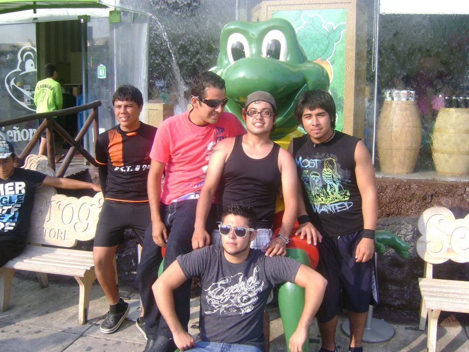

Secundaria |
|
Historias de la Secundaria
Inicio
|
Una de las historias que más recuerdo de la secundaria fue cuando fui a una olimpiada a Culiacán, el primer partido que jugamos no fue tan complicado pues lo ganamos 4-0, fácil y seguro, el siguiente partido sí estuvo más duro y lo alcanzamos a sacar apenas por la mínima diferencia de 2 goles a 1, después de eso tomamos un descanso, porque el siguiente juego era hasta el siguiente día, ya siendo las 9 de la mañana empezamos con el siguiente juego que también lo ganamos 3-1, con eso clasificamos a semifinales la cual se complicó mucho porque empezamos perdiendo y el rival llevaba ventaja de 2 goles, pero en el segundo tiempo salimos mentalizados a dejar todo, no nos alcanzó para ganar pero sacamos un valioso empate que nos llevó a penales, ellos fallaron el primero y nosotros metimos los 5 penales lo cual nos ponía en lugar para disputar la final, pero esta vez no sería como queríamos que fuera, el rival era muchísimo mejor que los equipos a los que habíamos enfrentado y terminamos perdiendo 2-0, pero nos llevamos buena satisfacción porque nos dimos cuenta que todos dimos lo que traíamos y dejamos todo en la cancha, después de eso tuve un viaje de vacaciones a Mazatlán, pero lo raro es que no fue con familia, fue con puros amigos, pero claro iba alguien mayor encargado, el primer día como siempre ocurre un accidente, cerca del mar en las rocas unos compañeros se querían tomar una foto en el paisaje pero de lo que no se dieron cuenta era que estaban demasiado adentro del mar y llego una ola muy grande y se llevó a uno de mis amigos, no lo metió al mar pero lo tumbo en las mismas piedras, cuando se levantó tenía toda la espalda raspada y con la cabeza abierta, rápido fuimos a que lo curaran y al final le pusieron 4 puntos en la cabeza, la peor parte fue que no disfrutamos la playa. Yo estudie la secundaria en la EST #74, estaba en el taller de electrónica, con un maestro que no le caía bien a nadie, que era el maestro de taller que nos tocaba 8 horas a la semana, le apodaban el chupis, pero a todo esto si era buen profe y aprendí algunas cosas de él.
|  |
|